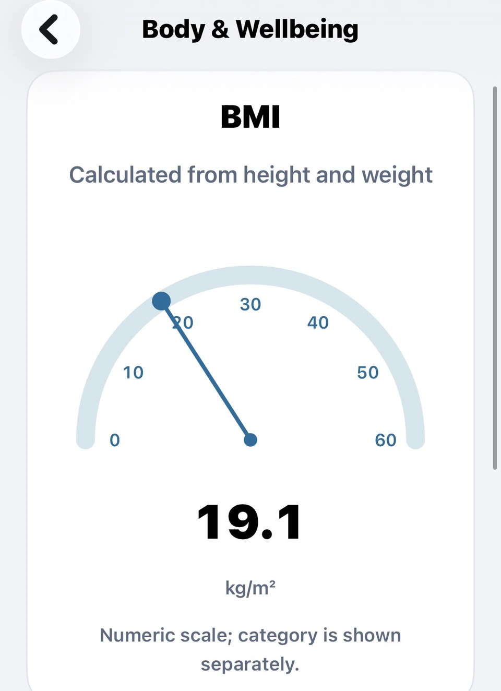
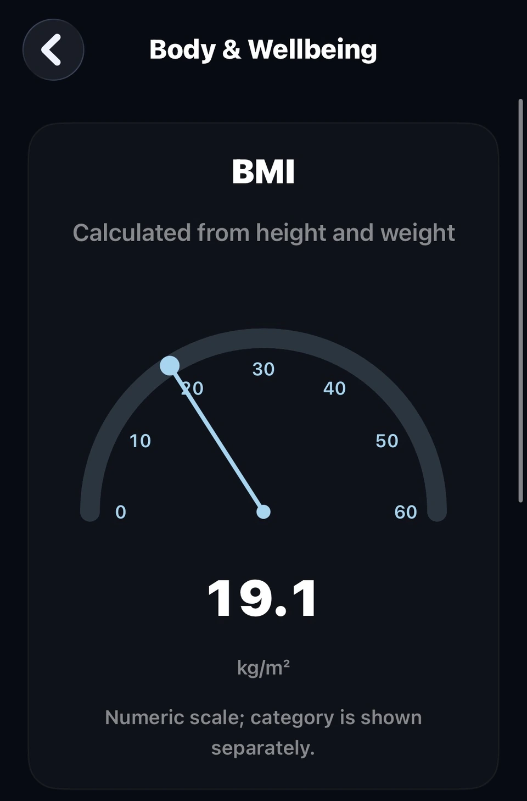

A native SwiftUI prototype with a frozen numerical model, explicit data provenance and a separate conversational layer.
The data lifecycle
One state. An explicit calculation. A record of its context.
The estimate belongs to the inputs and assessment that produced it. Refreshing the screen never turns an old result into a new one.
01
Bring the context together
Permission-controlled Apple Health reads, manual academic inputs and subject, assessment and date context enter shared TwinTrack state.
02
Check eligibility and freshness
Missing or stale inputs prevent an eligible new calculation. Unavailable readings remain unavailable; the app does not silently substitute zero.
03
Construct exactly seven features
Four HealthKit values and three manual values form the numerical profile. Assessment dates and subject identity stay attached as context.
04
Run the frozen Ridge model
An explicit prediction action, including an authorized chat calculation, uses the shared calculation path. Identical valid inputs and model version give the same numerical result.
05
Save the result with its provenance
An immutable result retains its model, assessment and source context. Opening Home, refreshing inputs or viewing history does not generate a new estimate.
Apple Watch and other compatible sources can supply Apple Health. TwinTrack reads supported data through HealthKit; it does not write readings back to Health.
Three distinct paths
Ridge owns the numbers. Foundation Models supports the conversation.
A captured eligible baseline → temporary What-If changes → the same model → baseline/scenario comparison.
Scenarios show model sensitivity. They do not overwrite real inputs or normal prediction history, and they do not establish a causal grade gain.
Generative
Conversation & explanation
User request and permitted current or historical context → app routing and read-only or calculation tools → app-owned cards and Foundation Models prose.
Conversation depends on supported, ready devices. Generated prose is not an authoritative score or health measurement.
Optional · separate
Wellbeing context
RHR history → an experimental personal trend. Local body measurements → app-calculated BMI.
Neither path changes the academic estimate. Optional chat access uses an authorized, read-only BMI summary. Conversation uses permitted app context rather than a direct feed of raw Health samples, profile photos or date of birth.
Recorded software evidence · 6 October 2026
Tested behavior. A precise boundary.
The latest complete simulator gate passed. Final physical acceptance and real-student predictive validation remain separate questions.
534/534
Simulator executions passed
531 distinct cases
176/176
V2 golden profiles matched
21/21 legacy V1 profiles preserved
PASS
Build · Analyze PASS
0 compiler / 0 analyzer warnings
Software verification establishes exercised implementation behavior and numerical parity. It does not establish real-student prediction accuracy.
Inspect execution counts, numerical precision and remaining findings
Recorded environment and scope
02:21–03:00 Asia/Dubai. Xcode 26.6 · iPhone 17 Pro simulator · iOS 26.5. The recorded results describe the app’s latest complete simulator gate.
492 unit + 42 UI executions: 39 distinct UI methods; the launch method runs 4 configurations. This explains the difference between execution and case totals.
Final complete gate: 0 failures and 0 skips. Earlier failing attempts and harness corrections are not erased by the final pass.
Golden parity: tolerance 1e-6; maximum absolute error approximately 2.84217e-14. Parity profiles run inside unit-test methods and are already represented in the execution total.
One grouped debugger-termination warning remains recorded.
These findings are separate from compiler/analyzer diagnostics.
Selected iPad checks
3 November 2026 update: The project owner reports the app working on iPad and supplied six Light/Dark captures covering Home, TwinTrack AI and Profile. See the iPad experience and school-day use case. This user-reported operation is separate from the earlier automated checks below.
4 selected cases have passing executions on identical source: the initial batch was 2/4, followed by an unchanged failed-case rerun of 2/2. The first batch was not a pass; this is not a complete iPad suite.
The numerical contract
A reproducible model. A deliberately narrow target.
The frozen calculation is implemented locally in Swift and was developed using synthetic profiles. Its output is an experimental assessment-score estimate clamped to 0–100.
The bound is not a confidence interval or an accuracy guarantee. No calibrated real-student prediction interval is available.
Which assessment is eligible
The target is the next scheduled, individually graded written quiz, test or exam in the selected subject, 1–7 local calendar days ahead.
The previous score must be the most recent comparable same-subject result, 1–90 local calendar days old, normalized to a percentage.
These windows are product assumptions, not empirically validated prediction horizons. Subject, assessment identity, dates and comparability are eligibility and provenance metadata, not extra Ridge features.
Inspect the seven features and their source windows
The fixed feature order is preserved below. Measurements summarize different source periods; they are not a continuous live measurement of readiness.
Sleep hourssleep_hours
HealthKit: combined asleep intervals, including naps, from yesterday’s local noon through the earlier of now and today’s local noon.
Stepssteps
HealthKit: the previous completed local calendar day.
Exercise minutesexercise_minutes
HealthKit Apple Exercise Time: the previous completed local calendar day.
Resting heart rateresting_heart_rate
HealthKit: latest valid positive sample within the previous 72 elapsed hours, retaining its timestamp.
Study minutesstudy_minutes
Manual: selected-subject study outside class during the previous local day. Educational screen use belongs here.
Recreational screen timescreen_time_minutes
Manual: recreational screen use during the previous local day. Dated study and screen reports may require reconfirmation.
Previous scoreprevious_score
Manual: the comparable same-subject assessment percentage within the eligible prior-result window.
BMI, date of birth, growth reference and the RHR wellbeing trend are not academic features. Scientific support also differs across the seven inputs.
Saved estimates keep the model, assessment and source identity that produced them. Opening an old record or explaining it does not recalculate it as current. Recorded trends preserve gaps where dates are missing.
Conversation has explicit controls
Conversations can be renamed or deleted. Editing a user message removes later turns before regeneration. Cancellation and chat-switch guards prevent late output from entering another conversation; live conversational quality still needs physical acceptance.
Local processing and deliberate sharing
Academic calculations, model sessions and app-owned stores are local. The architecture has no app account or backend. HealthKit reads are permission-controlled, and saved estimates and chats have separate controls. Export is user-initiated and lets the user choose a destination.
Optional BMI chat access is read-only and off by default. Relevant requests use fresh authorized summaries. Revocation affects future reads, not cards already saved or exports already shared.
Inspect the optional wellbeing boundary
The experimental RHR trend compares recent readings with a personal baseline using development thresholds. It does not diagnose illness or create emergency alerts from RHR alone.
Body & Wellbeing calculates BMI locally. With complete age and reference information, ages 2–19 use CDC BMI-for-age interpretation; ages 20 and over use adult categories. Missing reference information leaves interpretation unavailable.
This is optional, non-diagnostic context. The U.S. reference does not establish UAE-specific or clinical validation, and wellbeing information never changes Ridge output.
Real Light and Dark app views with approved fictional demo information. These optional BMI examples are separate from academic Ridge prediction.

Light appearance · real app screenshot

Dark appearance · real app screenshot
Development journey
More context. More precise claims.
The project evolved from a local prototype into a native app, then strengthened the boundaries around its numbers, saved records and evidence.
Earlier prototype · exact date unconfirmed
Explore the numerical workflow
A Windows/Python Ridge prototype and local Qwen3 4B/Ollama conversation explored the workflow. These are historical technologies, not the current mobile stack.
7 September 2026
Establish the native foundation
Three SwiftUI tabs, shared state, persistent manual inputs and frozen V1 Ridge with golden-profile parity established a reproducible native foundation.
8–9 September 2026
Connect data and scenarios
Read-only HealthKit, Home, deterministic What-If and saved estimates brought source context into the app. Refresh and timing corrections made the relationship between an input and its result clearer.
9–15 September 2026
Add on-device conversation
Foundation Models added conversation alongside app-owned numbers, followed by focused reliability and safety work. This historical checkpoint is not current physical acceptance.
21 September 2026
Make the V2 contract explicit
Ridge V2 introduced dated, same-subject assessment eligibility with golden-profile parity, while preserving V1. The model target and source context became explicit.
21–22 September 2026
Keep optional wellbeing separate
An experimental personal RHR trend, refined Manual Inputs and optional age-aware BMI added context without changing the academic model.
24–30 September · committed 1 October 2026
Strengthen context and saved records
Grounded calculation and scenario routing, consent-controlled BMI reads, Trends & History and exact saved-estimate explanations kept a conversation attached to the correct record.
6 October 2026
Consolidate verification and research
The complete 534-execution automated gate passed. A deeper evidence review sharpened the project’s claims; physical acceptance and prospective predictive validation remain distinct open steps.
Dates identify documented project milestones, not necessarily the first day work began. A historical freeze label does not establish current physical acceptance.
Engineering reliability is one part of the question.
The next scientific step is frozen V2 against a previous-score baseline on real upcoming same-subject assessments.